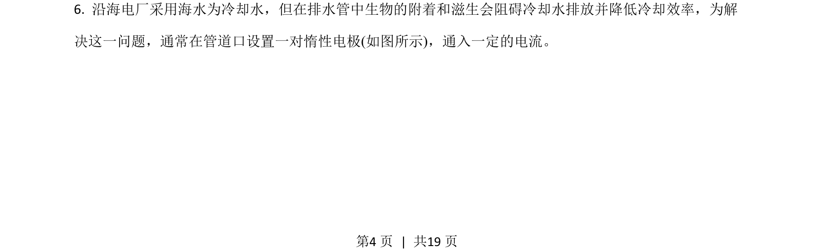
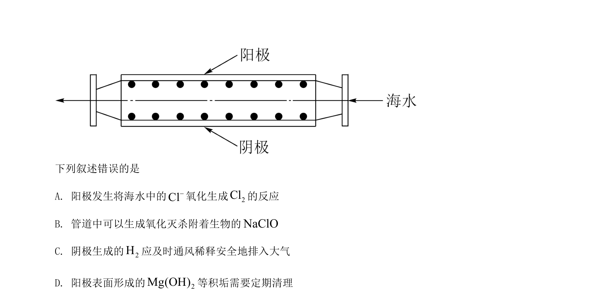
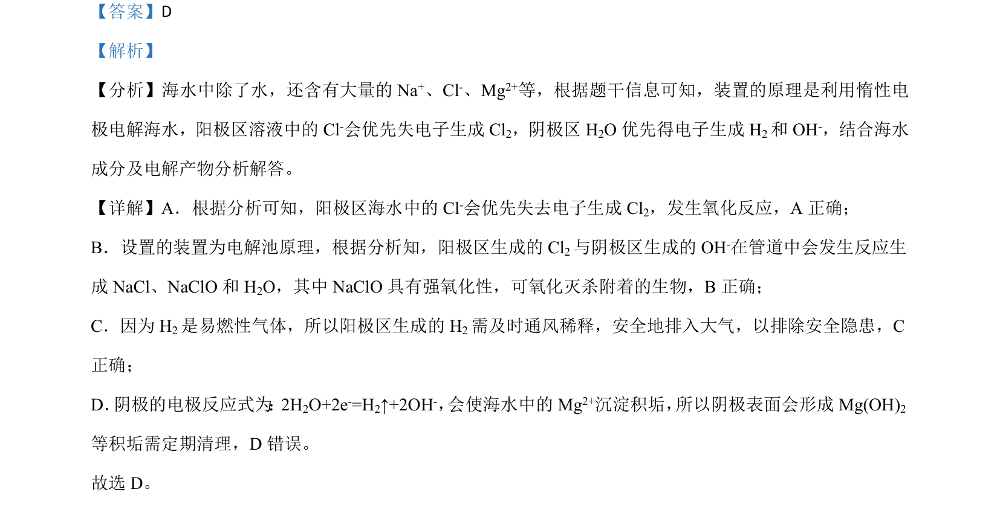

考点：电解池 阳极氧化 阴极还原 海水成分
电解池
阳极氧化
阴极还原
海水成分


该题以电解海水防生物附着为背景，考查电解原理、电极反应及产物分析。

📄 原 PDF 第 4 页：素材/真题/吉林/2008-2024·（吉林）化学高考真题/2021年高考化学试卷（全国乙卷）（解析卷）.pdf
素材/真题/吉林/2008-2024·（吉林）化学高考真题/2021年高考化学试卷（全国乙卷）（解析卷）.pdf